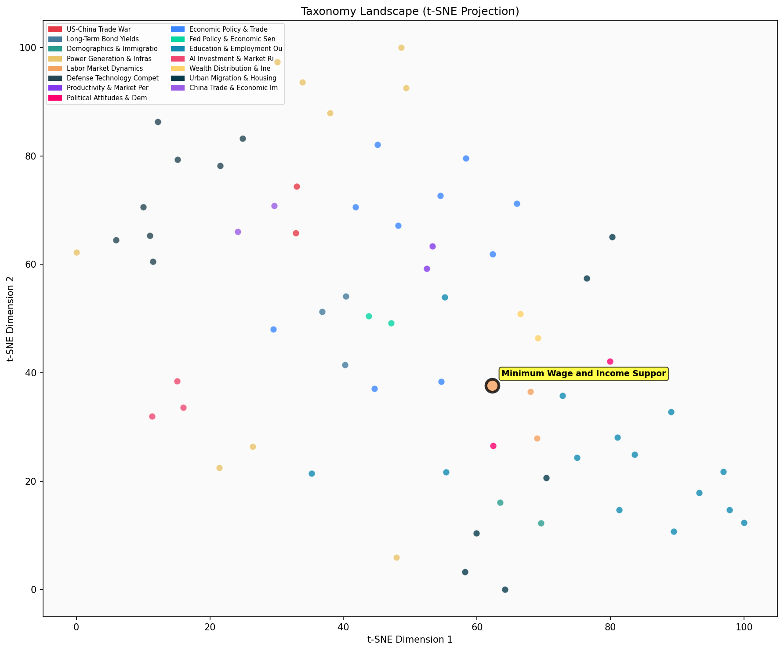

Description
This subcluster examines government interventions in labor markets through minimum wage policies and income support programs. Articles analyze policy impacts using empirical data from sources like CBO, CPS, and HUD, featuring randomized experiments, statistical analyses, and case studies of specific jurisdictions. Common themes include trade-offs between wage increases and employment effects, welfare program utilization, tax credit systems, and unconditional cash transfer experiments. Unlike sibling clusters focusing on organic wage trends or employment patterns, this subcluster specifically evaluates deliberate policy interventions and their economic consequences on low-income households and labor market outcomes.
Similarity to All 70 Subclusters
Each cell represents a subcluster. Color intensity shows similarity (blue=low, red=high). Black line marks current subcluster position.
Relationship to Primary Clusters
Average similarity to each of the 15 primary clusters. Larger area = stronger relationship to that cluster.
Taxonomy Landscape
All 70 subclusters positioned by similarity (t-SNE). Current subcluster highlighted with label. Click to enlarge.
Network Connections
Current subcluster at center, connected to related subclusters. Line thickness = similarity strength.
Most Representative Articles
-
1. CBO analysis of a $15 an hour minimum wage estimates a reduction in employment by 1.3 million worker
-
2. Minimum wage impact varies by scale: Large hikes cut low-skill jobs -2.5%, small/indexed rises show
-
3. Minimum wage increases of 10% or more reduced employment among low-skilled individuals by 2%. Smalle
-
4. CBO estimates that raising the federal minimum wage to $15/hr by 2025 would increase pay of 27.3m wo
-
5. Raising the minimum wage has multifaceted benefits beyond increasing paychecks. A $15 minimum wage c
Edge Cases (Boundary Articles)
-
1. This year a married couple with 2 children can earn $65,708 without paying federal income taxes; theThis article is borderline because while it discusses government income support policies (tax subsidies for families), it focuses specifically on how the tax system differentially treats families with and without children rather than examining minimum wage policies or broader income support programs for low-wage workers. The content is more closely aligned with family policy and tax policy than with labor market interventions, which explains why it has higher similarity to the fertility/family structure cluster.
-
2. New Illinois audit finds 50.4% of $3.6bn in federal Pandemic Unemployment Assistance benefits were lThis article is borderline because while it discusses a government income support program (Pandemic Unemployment Assistance), it focuses primarily on fraud detection and financial losses rather than analyzing the policy design, labor market impacts, or effectiveness of the income support mechanism itself. The article's emphasis on audit findings and fiscal waste aligns more closely with government spending analysis than with the typical policy evaluation approach of the minimum wage and income support cluster.
-
3. HUD data on 4.5mm households show a median stay in public or subsidized housing of 10–15 years, ofteThis article is borderline because while it discusses income support through housing subsidies (which relates to the cluster's focus on government income support programs), its primary emphasis is on housing policy mechanics and tenant duration rather than labor market interventions or minimum wage policies. The article's focus on housing subsidy structures and occupancy patterns aligns more closely with housing market analysis than with traditional minimum wage and income support policy discussions.
Original Dendrogram